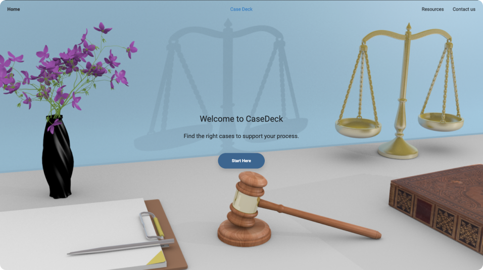
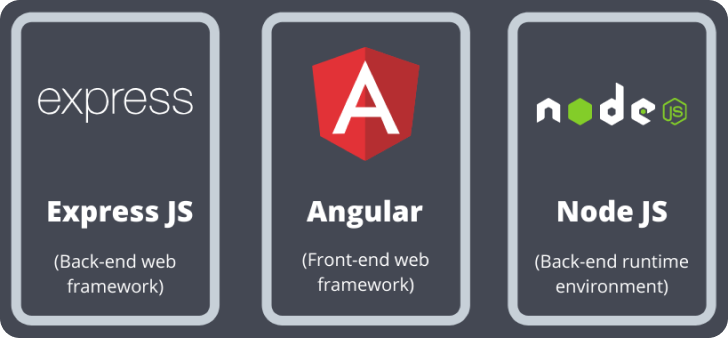

A digital product for BC HRT users to find specific relevant cases to support their case in court.
On the BC HRT website, how might we make it easier for both complainants & respondents to..
A digital website and search engine utilizing subject search and keyword search. Firstly, the subject search is used to search for cases that are categorized by certain subjects, personal characteristics and discrimination area. This narrows down the search to to specific area of cases and reduces the results considerably. Then, the users can choose to further narrow down their search by inputing their story. The story will be recognized by natural language processor and generates keywords to search within the results.
We worked within an Agile framework which guided our overall design process.
In the beginning of the project, Our team was given an open-ended problem on a topic that all of us were not familar with. We started off by exploring the topic of law and the BCHRT complaint process. As I got familiar with the legal system, I focused on researching in the technical perspective, including competitor analysis, natural language processing, and search algorithm.
My primary role for this project is developer. We used Node.js, Express.js, and Angular as our web stack. I worked closely with my partner developer on all parts of the web stack.
In the beginning, I worked on data manipulation. As the decision documents we received were in HTML format, we needed to stripe out the metadata for the cases as quickly assessable information displayed on our website. Therefore, I analyzed the decision documents and combined all the metadata into JSON objects.
Then, I focused on the frontend as my partner worked on the backend. I worked closely with the designers on the team to develop the look and feel of the application and iteratively improved the design based on user testing results. Diving into the details of frontend, the website is developed using Angular framework with data flow managed using a centralized service to interact with the backend API. Also, the RESTful backend API was created by me using Express.js, which connected the functionalities my partner developed.
